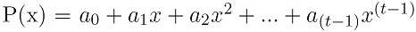
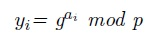
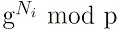
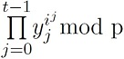
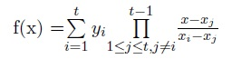

Der Verifiable Secret Sharing Algorithmus wurde 1987 von Paul Feldman entwickelt und basiert auf dem von Adi Shamir 1979 entwickelten Secret Sharing Verfahren Shamir's Secret Sharing, mit dem es möglich ist, ein Geheimnis auf mehrere Personen aufzuteilen, wobei eine gewisse Untermenge dieser Personen erforderlich ist, um das Geheimnis zu rekonstruieren.
Seien n und t natürliche Zahlen. In einem (n,t)-Secret-Sharing-Protokoll wird das
Geheimnis auf n Personen aufgeteilt. Jede Person hat einen Share des Geheimnisses.
Wenn sich t dieser Personen zusammentun, können sie das Geheimnis rekonstruieren.
Wenn sich aber weniger als t dieser Teilgeheimnisträger zusammentun, können sie
keine relevante Informationen über das Geheimnis erhalten. Dieses Prinzip kann man
mit einer Schatzkarte vergleichen, die auf mehrere Personen verteilt wird. Nur wenn
alle Teile der Schatzkarte zusammengelegt werden, dann man den Schatz
finden. Bedenkt man jetzt jedoch, dass jeder Teilgeheimnisträger seinen Teil der
Schatzkarte verändern und dadurch die Bedeutung der gesamten Karte ändern könnte,
ist es notwendig, das zu verhindern. Der Verifiable Secret Sharing-Algorithmus erweitert
den Shamir's Secret Sharing Algorithmus um diese Funktionaliät.
Der Algorithmus von Shamir basiert auf der Lagrange-Polynominterpolation und ist
ein (n,t)-Secret-Sharing-Protokoll. Alle Berechnungen werden im Ganzzahlkörper
ℤ∕p* durchgeführt.
Der Dealer will ein Geheimnis s ∈ ℕ verteilen.

Das Polynom ist vom Grad ≤ t - 1.

Die Commitments werden später zur Überprüfung der Shares benötigt.
Vor der Rekonstruktion erfolgt noch die Überprüfung der Shares. Der Check besteht aus 2 Schritten.
Schritt 1:

Schritt 2:

Stimmen die Ergebnisse dieser Berechnungen überein, ist der Share als korrekt verifiziert. Diese Berechnung für jeden zu überprüfenden Share einzeln durchgeführt werden. Um das Geheimnis rekonstruieren zu können, nehmen wir an, dass t Shareholder zusammen arbeiten. Ihre Shares seien Ni = P(i),1 ≤ i ≤ t. Dabei ist P(x) das Polynom aus (1).

Diese Formel wird von den Shareholdern benutzt, um das Geheimnis zu konstruieren.